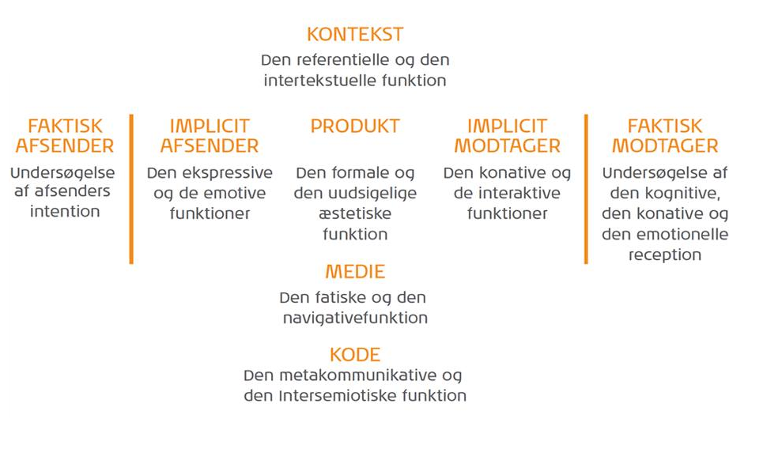

Mediesociologi
Når man som multimediedesigner fremlægger og argumenterer for en løsning, skal man være i stand til argumentere grundigt for sine antagelser. Der findes et hav af modeller og teorier, der kan hjælpe hertil, men overordnet set kan alle disse deles op i to kategorier: det humanistiske paradigme og det samfundsvidenskabelige paradigme. De har hver sin måde at anskue verden på, og derved anskuer de også løsninger helt forskelligt.
Det humanistiske paradigme
Det humanistiske paradigme sætter individet i centrum, og det fokuserer oftest på modtageren, der skal være både medskabende og en aktiv medspiller. Af samme årsag kaldes det også interaktionsparadigmet, da det hviler på interaktion mennesker i mellem.
Udover interaktionselementet, har det humanistiske paradigme nogle grundlæggende træk:
- Subjektivitet
- Fortolkning
- Kvalitativ tilgang
- Induktion
- Situationsbestemt
- Modtagerorienteret
- Interaktion mellem mennesker
- Mennesket ses som aktivt
IMK-modellen
IMK-modellen er en klassisk model i dansk kommunikationsundervisning, og den er således toneangivende for, hvordan vi i Danmark arbejder med kommunikation. Modellen tager tekst som sit udgangspunkt, og den fortæller, hvordan kontekst, medie og genre er med til at skulpturere teksten. Modellen hører under det humanistiske paradigme, og af den årsag ligestiller den måde afsender og modtager og gør dem til ligeværdige. Både afsender og modtager er aktive medspillere, og selvom afsenderen har videregivet information, så er der ikke tale om kommunikation, før modtageren har behandlet informationen. Der er således tale om en interaktionsproces, hvor støj former budskabet.
Som det ses på modellen, vil der i teksten være en referent, og det kan bedst beskrives som alt det, teksten refererer til. Referenten medfølger som en del af en brandingstrategi, da formålet er at skabe opmærksomhed om noget.
Koden sendes med teksten fra afsender til modtager, og koden beskriver, hvad modtageren skal have af viden for at forstå meningen med teksten. Koden udgøres af kontekst og kultur, medie og ikke mindst genre. Hvis afsenderen har en bestemt kulturel baggrund og modtageren en anden, så er det ikke sikkert, at modtageren tolker teksten, som afsenderen havde håbet på. Derfor er det vigtigt at kende sin målgruppe godt.
Thorlacius’ kommunikationsmodel
Det er ikke kun IMK-modellen, der har betydning for kommunikation. Også Thorlacius’ kommunikationsmodel er hyppigt brugt. Modellen centrerer sig om webkommunikation, og den har til formål at beskrive og forklare de funktionelle og de visuelle aspekter indenfor det felt.
- Den faktiske afsender
- Den, der helt reelt er afsender af kommunikationsmidlet. For eksempel en virksomhed.
- Den implicitte afsender
- Den visuelle afsender. Det vil sige billeder, farver, figurer o.lign., og formålet med den implicitte afsender er at vække nøje udvalgte følelser hos modtageren.
- Produktet
- I de fleste situationer er det et website, og den hviler på kontekst, medie og kode. Websitet eksisterer af en årsag og indgår derfor i en sammenhæng, og det er det, der er konteksten. Mediet knytter sig til den implicitte modtagers bevidsthed, om at modtageren befinder sig på det ønskede website. Koden har intet med websitets kildekode at gøre, men derimod er der tale om de ting, der gør det muligt for afsender og modtager at forstå hinanden.
- Den implicitte modtager
- Den som afsenderen har tiltænkt eksempelvis et website til
- Den faktiske modtager
- Den, der skal bruge produktet fra websitet. Den implicitte og faktiske modtager kan være sammen gruppe, men det er ikke en selvfølge. Den implicitte modtager kan være forældre, der finder legetøj til sine børn, og derved er børnene de reelle modtagere.
Det samfundsvidenskabelige paradigme
Det humanistiske paradigme sætter modtager og afsender lige for hinanden, men ved det samfundsvidenskabelige paradigme er afsenderen i centrum. Afsenderen står som styrende for hele kommunikationsprocessen, og dette paradigme søger at beskrive, hvordan noget påvirker noget andet. Desuden søges der at sætte tal på hændelser, og man arbejder først fra et teoretisk grundlag, der sendes føres ud i praksis, men først når alle forudsigeligheder er fastlagt.
Såvel som det humanistiske paradigme har det samfundsvidenskabelige paradigme sine egne særtræk.
- Objektivitet
- Forklaring
- Kvantitativ tilgang
- Deduktion
- Stabile omgivelser
- Afsenderorienteret
- Transmission
- Handlingsanvisende
- Modtageren ses som passiv
Transmissionsmodeller
Transmissionsmodeller strækker sig lang bagud i tiden, hvilket også er årsag til, at mange stiller sig kritiske overfor disse. Ikke desto mindre findes der nogle hyppigt brugte transmissionsmodeller, der i høj grad bruges i dag. Kanyleteorien og S-R-modellen er to af disse, og begge teorier arbejder ud fra, at modtagere kan styres via stærk og overbevisende stimuli – i kanyleteorien beskrives det som propaganda. Det klassiske eksempel, er voldelige computerspils indvirkning på børn og unge, og mange taler for at voldelige spil kan have en negativ indflydelse og få børnene selv til at udøve vold. S-R-modellen opdeles i S (stimulus) og R (respons), og modellen fortæller, at der efter et individ eller en gruppe udsættes for stimuli, vil de eftergive respons på den ene eller anden måde. Under både kanylemodellen og S-R-modellen foregår kommunikationen direkte fra afsender til modtager uden nogen mellemtrin.
S-O-R-modellen er lineær ligesom kanylemodellen og S-R-modellen, men den afskiller sig tydeligt fra de to ved ikke at se alle individer som ens. I stedet tilkendegiver den, at mennesker opfatter budskaber forskellige, og kommunikationen springer ikke direkte fra afsender til modtager. I stedet er der en organisme placeret i centrum, men det er ikke defineret, hvad denne organisme er, og det er således op til fri fortolkning.
En anden model, der også er hyppigt brugt, er Harold D. Laswells formel af fem trin. Laswells citat, ”Hvem siger hvad gennem hvilken kanal til hvem med hvilken effekt?” er en kort forklaring af modellen. Den tager udgangspunkt i afsenderen, der skal videregive sit budskab gennem en kanal (eksempelvis et website eller en reklame). Modtageren skal herefter gribe budskabet, og der ønskes en bestemt effekt hos modtageren – det kan være, at de skal købe et produkt eller stemme på en bestemt politiker.
Filip Kotler har lavet en model for markedskommunikation, og den har været brugt i mange år. Ifølge Kotlers model vil der altid være en masse mellem afsender og modtager, der kan transformere budskabet. Her kaldes det støj. Den arbejder ud fra en cirkulær kommunikation mellem afsender og modtager, og på sin vis minder den om en udvidet udgave af S-O-R-modellen. Kotlers model bygger desuden på kodning og afkodning af budskabet. Afsenderen pakker budskabet ind i en kode, hvorefter modtageren skal afkode budskabet.